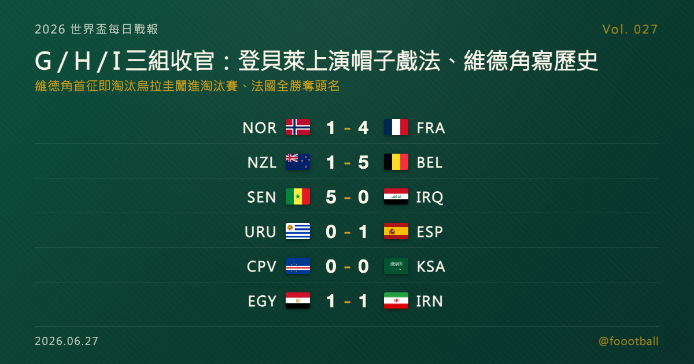

登貝萊第 32 分鐘完成帽子戲法、維德角首征世界盃即闖進淘汰賽；G／H／I 三組末輪同日收官
2026 世界盃 G、H、I 三組末輪同日收官。法國登貝萊對挪威一戰於第 32 分鐘完成帽子戲法、寫下 1954 年以來世界盃『最早完成』的帽子戲法紀錄，法國 4-1 三戰全勝奪 I 組頭名；首次參賽的維德角 0-0 逼平沙烏地、以小組第二淘汰兩屆冠軍烏拉圭，成為世界盃史上以最小人口國家之姿闖進淘汰賽的球隊。比利時、西班牙分奪 G、H 兩組頭名。

2026 世界盃每日戰報 Vol. 027｜小組賽｜G／H／I 三組末輪賽果
§1 即時比分戰報
2026 世界盃小組賽進入 G、H、I 三組的末輪，六場比賽同日落幕、三組名次全數底定，A 至 I 共九組就此收官。最耀眼的個人秀在福克斯堡——法國前鋒登貝萊（Ousmane Dembélé）在對挪威一戰連入三球，且三顆全在上半場、於第 32 分鐘完成帽子戲法，寫下自 1954 年以來世界盃「最早完成」的帽子戲法紀錄；法國 4-1 大勝、以三戰全勝奪下 I 組頭名。最動人的歷史則在休士頓誕生：首次踏上世界盃舞台的維德角（Cape Verde），靠 0-0 逼平沙烏地阿拉伯的一分，以 H 組第二名淘汰兩屆世界盃冠軍烏拉圭、闖進淘汰賽。另一頭，比利時 5-1 大勝紐西蘭奪下 G 組第一、西班牙 1-0 力克烏拉圭、以 2 勝 1 和又不失球之姿登頂 H 組。以下是本輪六場賽果：
| 賽事 | 比分 | 場館 | 焦點 |
|---|---|---|---|
| 🇳🇴 挪威 — 🇫🇷 法國 | 1 - 4 | 福克斯堡 Gillette Stadium | 登貝萊 7'＋20'＋32'（帽子戲法）、阿斯高 21'（NOR）、杜埃 90+4'；法國全勝奪 I 組頭名 |
| 🇸🇳 塞內加爾 — 🇮🇶 伊拉克 | 5 - 0 | 多倫多 BMO Field | 迪亞拉 4'、薩爾 56'、蓋耶 59'＋71'、恩迪亞耶 82'；伊拉克蘇拉卡 13' 紅牌剩 10 人 |
| 🇪🇬 埃及 — 🇮🇷 伊朗 | 1 - 1 | 西雅圖 Lumen Field | 薩伯 5'（EGY，特雷澤蓋助攻）、雷扎伊安 14'（IRN）；埃及小組第二晉級 |
| 🇳🇿 紐西蘭 — 🇧🇪 比利時 | 1 - 5 | 溫哥華 BC Place | 特羅薩德 28'＋50'、德布勞內 66'、薩勒馬科爾斯 84'、盧卡庫 補時；賈斯特 84'（NZL）；比利時奪 G 組頭名 |
| 🇨🇻 維德角 — 🇸🇦 沙烏地阿拉伯 | 0 - 0 | 休士頓 NRG Stadium | 互交白卷；維德角以 H 組第二、隊史首度晉級淘汰賽 |
| 🇺🇾 烏拉圭 — 🇪🇸 西班牙 | 0 - 1 | 瓜達拉哈拉 Estadio Akron | 巴埃納 42'；西班牙 2 勝 1 和不失球奪 H 組頭名、烏拉圭出局 |
六場分屬 G、H、I 三組末輪。三組頭名各由比利時、西班牙、法國收下；埃及、維德角、挪威分居各組第二、確定晉級淘汰賽。其中維德角首次參賽即闖進 32 強，是本日最大驚奇；兩屆世界盃冠軍烏拉圭則僅以小組第三、2 分黯然出局。§2 是三組最終排名，§4 則深入今晚最稀有的一則故事——一座大西洋上的小島國，如何在世界盃初登場就改寫自己的歷史。
§2 排行榜區：G／H／I 三組末輪收官
本屆晉級規則：12 個小組、每組前兩名加上 8 個最佳第三名，共 32 隊晉級淘汰賽。G、H、I 三組已全部踢完，各組前兩名確定晉級，第三名則視最佳第三名競爭情形而定。
G 組（末輪打完）——比利時與埃及同積 5 分，兩隊小組賽直接對話 1-1 言和、互比成績無法分出高下，依規則改比總淨勝球，比利時（+4）力壓埃及（+2）奪下小組第一；埃及以第二名晉級。伊朗三戰全和、3 分排名第三，能否擠進最佳第三名仍待 J、K、L 三組末輪揭曉；紐西蘭 1 分墊底出局：
| # | 球隊 | 賽 | 勝 | 和 | 負 | 進 | 失 | 差 | 分 |
|---|---|---|---|---|---|---|---|---|---|
| 1 | 🇧🇪 比利時 | 3 | 1 | 2 | 0 | 6 | 2 | +4 | 5 |
| 2 | 🇪🇬 埃及 | 3 | 1 | 2 | 0 | 5 | 3 | +2 | 5 |
| 3 | 🇮🇷 伊朗 | 3 | 0 | 3 | 0 | 3 | 3 | +0 | 3 |
| 4 | 🇳🇿 紐西蘭 | 3 | 0 | 1 | 2 | 4 | 10 | -6 | 1 |
H 組（末輪打完）——西班牙 2 勝 1 和、一球未失，7 分強勢奪冠；首度參賽的維德角三戰全和、3 分排名第二，隊史首度闖進世界盃淘汰賽；烏拉圭與沙烏地同積 2 分，烏拉圭靠較佳淨勝球（-1 對 -4）排名第三，但仍無緣晉級、就此出局：
| # | 球隊 | 賽 | 勝 | 和 | 負 | 進 | 失 | 差 | 分 |
|---|---|---|---|---|---|---|---|---|---|
| 1 | 🇪🇸 西班牙 | 3 | 2 | 1 | 0 | 5 | 0 | +5 | 7 |
| 2 | 🇨🇻 維德角 | 3 | 0 | 3 | 0 | 2 | 2 | +0 | 3 |
| 3 | 🇺🇾 烏拉圭 | 3 | 0 | 2 | 1 | 3 | 4 | -1 | 2 |
| 4 | 🇸🇦 沙烏地阿拉伯 | 3 | 0 | 2 | 1 | 1 | 5 | -4 | 2 |
I 組（末輪打完）——法國三戰全勝、9 分高居榜首，淨勝球 +8 為全大會之最；挪威兩勝一負、6 分排名第二，確定晉級；塞內加爾末戰 5-0 狂勝伊拉克，但 3 分排名第三，須待最佳第三名競爭塵埃落定；伊拉克三戰全敗、一分未取墊底出局：
| # | 球隊 | 賽 | 勝 | 和 | 負 | 進 | 失 | 差 | 分 |
|---|---|---|---|---|---|---|---|---|---|
| 1 | 🇫🇷 法國 | 3 | 3 | 0 | 0 | 10 | 2 | +8 | 9 |
| 2 | 🇳🇴 挪威 | 3 | 2 | 0 | 1 | 8 | 7 | +1 | 6 |
| 3 | 🇸🇳 塞內加爾 | 3 | 1 | 0 | 2 | 8 | 6 | +2 | 3 |
| 4 | 🇮🇶 伊拉克 | 3 | 0 | 0 | 3 | 1 | 12 | -11 | 0 |
G、H、I 三組的第三名分別是伊朗（3 分）、烏拉圭（2 分）、塞內加爾（3 分）。其中烏拉圭分數過低已確定出局；塞內加爾以淨勝球 +2 暫居三分球隊中最有利的位置，實質上已逼近晉級門檻，但與伊朗一樣，最終能否搭上最佳第三名末班車，仍要等 J、K、L 六組末輪全部結束才能正式拍板。截至目前，A 至 I 九組的前兩名已全部確定，部分第三名也已提前鎖定 32 強；剩餘名額將待 J、K、L 三組末輪後完全拍板。
§3 賽事摘要
- 挪威 1-4 法國：登貝萊（Ousmane Dembélé）的個人表演。法國前鋒第 7、20、32 分鐘三度破門，三球全在上半場入帳、於第 32 分鐘完成帽子戲法——這是自 1954 年奧地利的普羅布斯特（Erich Probst，第 24 分鐘）以來，世界盃「最早完成」的帽子戲法，史上排名第二。挪威僅靠阿斯高第 21 分鐘的進球扳回顏面，終場前再由杜埃（Désiré Doué）錦上添花。法國三戰全勝、淨勝球 +8 奪下 I 組頭名；挪威雖落敗，仍以小組第二晉級。
- 塞內加爾 5-0 伊拉克：一面倒的大勝。伊拉克後衛蘇拉卡（Rebin Sulaka）第 13 分鐘因破壞單刀被直接紅牌罰下，少打一人的伊拉克全面崩盤。塞內加爾由迪亞拉（Habib Diarra）第 4 分鐘先馳得點，下半場薩爾（Ismaïla Sarr）、蓋耶（Pape Gueye，第 59、71 分鐘梅開二度）與恩迪亞耶（Iliman Ndiaye）接力進球，5-0 大勝。塞內加爾以小組第三、淨勝球 +2 結束小組賽，出線情勢相當有利；伊拉克三戰全敗墊底出局。
- 埃及 1-1 伊朗：埃及如願晉級的一和。埃及由薩伯（Mahmoud Saber）第 5 分鐘在特雷澤蓋（Trezeguet）助攻下首開紀錄，伊朗隨即由雷扎伊安（Ramin Rezaeian）第 14 分鐘扳平。雙方此後再無建樹，1-1 平手。埃及以一勝兩和、5 分鎖定 G 組第二、確定晉級淘汰賽；伊朗則三戰全和、僅得 3 分排名第三，能否以最佳第三名出線仍在未定之天。
- 紐西蘭 1-5 比利時：比利時火力全開。特羅薩德（Leandro Trossard）第 28、50 分鐘上下半場各下一城，「紅魔」核心德布勞內（Kevin De Bruyne）第 66 分鐘錦上添花，替補上場的薩勒馬科爾斯與比利時史上頭號射手盧卡庫（Romelu Lukaku）也先後建功，最終 5-1 狂勝。紐西蘭僅由賈斯特第 84 分鐘攻入一球。比利時一勝兩和、5 分奪下 G 組第一晉級；紐西蘭 1 分墊底出局，但首次世界盃之旅仍有可圈可點之處。
- 維德角 0-0 沙烏地阿拉伯：寫進歷史的一分（詳見 §4）。首次參加世界盃的維德角，靠這場互交白卷的平局，以 H 組第二名、隊史首度闖進淘汰賽；沙烏地阿拉伯則三戰僅得 2 分墊底出局。對這座大西洋上的島國而言，0-0 的比分平淡，意義卻無比厚重。
- 烏拉圭 0-1 西班牙：西班牙完美收官、烏拉圭黯然出局。西班牙由巴埃納（Álex Baena）第 42 分鐘的進球全取三分，以 2 勝 1 和、一球未失，7 分奪下 H 組頭名；兩屆世界盃冠軍烏拉圭則三戰僅得 2 分、以小組第三出局，是本屆截至目前最受矚目的出局者之一。對提前鎖定頭名的西班牙來說，這場勝利更像是淘汰賽前一次氣勢十足的暖身。
§4 焦點觀察｜一座島、五十萬人、一張門票：維德角的世界盃初登場
如果說 I 組的夜晚屬於登貝萊的個人紀錄，那麼 H 組的夜晚，則屬於一個多數球迷此前未必能在地圖上指出來的名字——維德角。
維德角是西非外海、大西洋上的一座群島國家，人口約 52.5 萬，比台灣任何一個縣市都還少。今年是他們史上第一次踏進世界盃。在這之前，這支綽號「藍鯊」（Blue Sharks）的球隊，國家隊班底大半來自散居葡萄牙、荷蘭等地的僑民後裔——這是一支用整個大西洋的離散人口拼起來的隊伍。而就在初登場的這一屆，他們用三場小組賽全部踢平、不失分數過多的穩健，換來了一張通往 32 強的門票。
末輪面對沙烏地阿拉伯，維德角只需要一分。最終雙方 0-0 互交白卷，這個在任何其他比賽裡都顯得乏味的比分，對維德角而言卻是隊史最重要的一分。三場小組賽，他們對西班牙、烏拉圭、沙烏地全部握手言和、未嘗一敗，以 3 分、淨勝球 0 的成績壓過 2 分、淨勝球 -1 的烏拉圭，搶下 H 組第二。一支首次參賽的球隊，三戰不勝卻晉級——上一次有球隊以這種方式（小組賽零勝、全靠和局）闖進淘汰賽，要追溯到 1998 年的智利。
更具份量的是他們淘汰掉的對手：兩屆世界盃冠軍烏拉圭。蘇亞雷斯時代之後重建的烏拉圭，本屆三戰僅得 2 分、排名 H 組第三出局，把出線權拱手讓給了這座島國。對照之下，維德角不只是「來了」，而是真正擠下了一支南美傳統勁旅。
從紀錄的角度看，這也是一筆罕見的成就：維德角成為世界盃史上以最小人口國家之姿、闖進淘汰賽的球隊（人口約 52.5 萬）。需要說明的是，論「打進世界盃」本身，冰島、庫拉索等更小的國家都曾做到；但能在世界盃淘汰賽的舞台上佔有一席之地，維德角創下的是人口規模上的新低紀錄。
足球世界最迷人的地方，往往不在強權的勝利，而在這種「原本不該發生」的故事真的發生了的瞬間。當西班牙、法國、比利時這些豪門按部就班地收下頭名，維德角用三場和局，為 2026 世界盃寫下了第一個真正意義上的童話。淘汰賽的對手會是誰、這趟旅程能走多遠，都還是未知數；但無論接下來如何，這座大西洋小島，已經把自己的名字，永遠刻進了世界盃的歷史。
§5 接下來看點
A 至 I 九組收官後，小組賽只剩 J、K、L 三組的末輪尚未踢完，最後三組頭名與剩餘的最佳第三名門票，將在這幾場一次發完。星光最盛的兩場分別是 K 組的哥倫比亞對葡萄牙——C 羅恐怕生涯最後一屆世界盃的小組壓軸，以及 J 組的約旦對阿根廷——衛冕熱門與梅西能否以全勝收官備受矚目；同組的阿爾及利亞對奧地利、L 組的英格蘭對巴拿馬與克羅埃西亞對迦納，則牽動最後幾張晉級門票的歸屬。這三組打完後，32 強淘汰賽的完整對戰圖才會成形，最佳第三名的 8 張門票也將全部發完。屆時包含維德角在內的多支球隊，才會知道自己淘汰賽首輪的對手是誰；完整籤表，Vol. 028 接著報。
常見問題
Q：維德角是怎麼晉級的？他們不是一場都沒贏嗎？ A：是的，維德角三場小組賽全部踢和（對西班牙、烏拉圭、沙烏地各 1 分），以 3 分、淨勝球 0 排名 H 組第二而晉級。世界盃小組賽看的是三場總積分，勝場不是唯一條件；維德角靠著穩定不敗，以 3 分、淨勝球 0 的成績壓過只拿 2 分、淨勝球 -1 的烏拉圭，搶下小組第二的晉級席位。這也是他們史上首次參加世界盃。
Q：登貝萊真的破了帽子戲法紀錄嗎？ A：他締造的是世界盃「最早完成」帽子戲法的史上第二快紀錄。登貝萊在對挪威一戰於第 7、20、32 分鐘連入三球，於第 32 分鐘完成帽子戲法，是自 1954 年奧地利球員普羅布斯特（第 24 分鐘完成）以來最早的一次。換言之，他並非「史上最快」，而是史上排名第二早、也是近年罕見的上半場帽子戲法。
Q：烏拉圭出局了嗎？G、H、I 三組哪些球隊晉級？ A：兩屆冠軍烏拉圭三戰僅得 2 分、以小組第三出局。三組晉級球隊為各組前兩名：比利時與埃及（G）、西班牙與維德角（H）、法國與挪威（I）。伊朗（G 組第三）與塞內加爾（I 組第三）能否以最佳第三名晉級，仍須等 J、K、L 三組末輪打完才能確定。
Tags: 世界盃, 2026世界盃, 維德角, 登貝萊, 法國, 西班牙